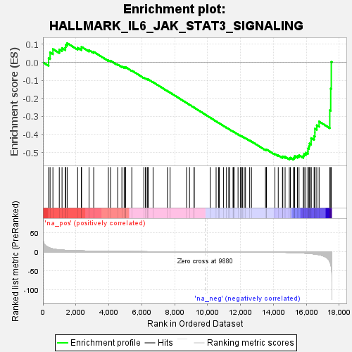
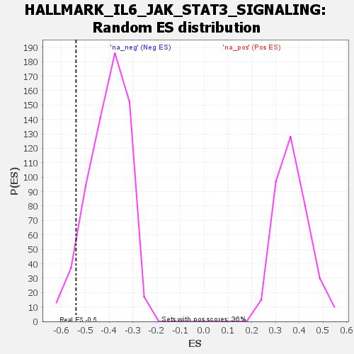

| | | Dataset | tcga_raw_counts.Tumor.vs.Normal.DESeq2_results_report_rankbyabsstat |
| Phenotype | NoPhenotypeAvailable |
| Upregulated in class | na_neg |
| GeneSet | HALLMARK_IL6_JAK_STAT3_SIGNALING |
| Enrichment Score (ES) | -0.5391728 |
| Normalized Enrichment Score (NES) | -1.3322537 |
| Nominal p-value | 0.0671875 |
| FDR q-value | 0.22747977 |
| FWER p-Value | 0.814 |
Table: GSEA Results Summary

Fig 1: Enrichment plot: HALLMARK_IL6_JAK_STAT3_SIGNALING
Profile of the Running ES Score & Positions of GeneSet Members on the Rank Ordered List
| SYMBOL | RANK IN GENE LIST | RANK METRIC SCORE | RUNNING ES | CORE ENRICHMENT | | 1 | CXCL10 | 344 | 11.425 | 0.0231 | No |
| 2 | CXCL11 | 434 | 9.800 | 0.0546 | No |
| 3 | CXCL9 | 606 | 7.631 | 0.0734 | No |
| 4 | IL9R | 993 | 5.280 | 0.0710 | No |
| 5 | CXCL13 | 1160 | 4.670 | 0.0790 | No |
| 6 | TNFRSF12A | 1363 | 4.086 | 0.0827 | No |
| 7 | BAK1 | 1383 | 4.044 | 0.0968 | No |
| 8 | INHBE | 1472 | 3.853 | 0.1061 | No |
| 9 | HAX1 | 2109 | 2.785 | 0.0802 | No |
| 10 | ITGA4 | 2333 | 2.525 | 0.0769 | No |
| 11 | CD9 | 2345 | 2.507 | 0.0856 | No |
| 12 | LTBR | 2801 | 2.062 | 0.0673 | No |
| 13 | PTPN1 | 3084 | 1.835 | 0.0580 | No |
| 14 | REG1A | 3974 | 1.269 | 0.0119 | No |
| 15 | DNTT | 4107 | 1.200 | 0.0088 | No |
| 16 | LTB | 4540 | 0.998 | -0.0122 | No |
| 17 | GRB2 | 4798 | 0.897 | -0.0235 | No |
| 18 | MYD88 | 4936 | 0.856 | -0.0282 | No |
| 19 | IL2RG | 5013 | 0.827 | -0.0294 | No |
| 20 | TGFB1 | 5020 | 0.824 | -0.0267 | No |
| 21 | STAT1 | 5400 | 0.698 | -0.0458 | No |
| 22 | PTPN2 | 6131 | 0.472 | -0.0858 | No |
| 23 | IRF9 | 6224 | 0.450 | -0.0893 | No |
| 24 | IL1R2 | 6331 | 0.423 | -0.0938 | No |
| 25 | CSF2 | 6365 | 0.416 | -0.0942 | No |
| 26 | STAT3 | 6401 | 0.406 | -0.0946 | No |
| 27 | ACVR1B | 6693 | 0.334 | -0.1100 | No |
| 28 | IL17RB | 7564 | 0.174 | -0.1592 | No |
| 29 | TYK2 | 7725 | 0.150 | -0.1678 | No |
| 30 | CD38 | 8726 | 0.042 | -0.2248 | No |
| 31 | IRF1 | 8907 | 0.031 | -0.2350 | No |
| 32 | CD44 | 9185 | 0.016 | -0.2508 | No |
| 33 | CCR1 | 9192 | 0.016 | -0.2511 | No |
| 34 | IL13RA1 | 10161 | -0.003 | -0.3065 | No |
| 35 | IL1B | 10523 | -0.015 | -0.3271 | No |
| 36 | IL12RB1 | 10676 | -0.024 | -0.3357 | No |
| 37 | FAS | 10717 | -0.027 | -0.3379 | No |
| 38 | IFNGR2 | 10977 | -0.048 | -0.3525 | No |
| 39 | IL4R | 11154 | -0.067 | -0.3623 | No |
| 40 | SOCS1 | 11292 | -0.083 | -0.3699 | No |
| 41 | OSMR | 11339 | -0.089 | -0.3722 | No |
| 42 | IL18R1 | 11551 | -0.114 | -0.3838 | No |
| 43 | TNF | 11580 | -0.117 | -0.3850 | No |
| 44 | HMOX1 | 11614 | -0.122 | -0.3864 | No |
| 45 | STAT2 | 11856 | -0.162 | -0.3996 | No |
| 46 | TLR2 | 12009 | -0.190 | -0.4076 | No |
| 47 | CXCL1 | 12029 | -0.194 | -0.4079 | No |
| 48 | CSF3R | 12053 | -0.198 | -0.4085 | No |
| 49 | TNFRSF21 | 12123 | -0.212 | -0.4117 | No |
| 50 | PTPN11 | 12232 | -0.235 | -0.4170 | No |
| 51 | EBI3 | 12308 | -0.253 | -0.4203 | No |
| 52 | PDGFC | 12562 | -0.314 | -0.4336 | No |
| 53 | IL10RB | 12672 | -0.345 | -0.4386 | No |
| 54 | TNFRSF1A | 13523 | -0.679 | -0.4847 | No |
| 55 | PIK3R5 | 13575 | -0.713 | -0.4849 | No |
| 56 | STAM2 | 13583 | -0.719 | -0.4826 | No |
| 57 | PIM1 | 14096 | -0.988 | -0.5082 | No |
| 58 | CRLF2 | 14299 | -1.132 | -0.5155 | No |
| 59 | JUN | 14556 | -1.331 | -0.5252 | No |
| 60 | IL2RA | 14576 | -1.348 | -0.5213 | No |
| 61 | IL7 | 14716 | -1.468 | -0.5237 | No |
| 62 | IL17RA | 14970 | -1.738 | -0.5317 | Yes |
| 63 | ITGB3 | 15038 | -1.827 | -0.5287 | Yes |
| 64 | CSF2RB | 15222 | -2.082 | -0.5314 | Yes |
| 65 | IFNAR1 | 15279 | -2.170 | -0.5265 | Yes |
| 66 | CBL | 15298 | -2.196 | -0.5193 | Yes |
| 67 | IFNGR1 | 15464 | -2.492 | -0.5194 | Yes |
| 68 | IL6ST | 15562 | -2.666 | -0.5150 | Yes |
| 69 | MAP3K8 | 15820 | -3.215 | -0.5177 | Yes |
| 70 | CSF2RA | 15869 | -3.324 | -0.5080 | Yes |
| 71 | SOCS3 | 15976 | -3.634 | -0.5005 | Yes |
| 72 | CXCL3 | 16103 | -4.064 | -0.4925 | Yes |
| 73 | IL15RA | 16105 | -4.068 | -0.4773 | Yes |
| 74 | IL1R1 | 16167 | -4.292 | -0.4647 | Yes |
| 75 | CD14 | 16202 | -4.439 | -0.4501 | Yes |
| 76 | IL3RA | 16295 | -4.788 | -0.4374 | Yes |
| 77 | TNFRSF1B | 16298 | -4.795 | -0.4196 | Yes |
| 78 | ACVRL1 | 16478 | -5.657 | -0.4087 | Yes |
| 79 | IL6 | 16526 | -5.882 | -0.3894 | Yes |
| 80 | PF4 | 16527 | -5.888 | -0.3674 | Yes |
| 81 | PLA2G2A | 16641 | -6.657 | -0.3489 | Yes |
| 82 | CSF1 | 16781 | -7.714 | -0.3280 | Yes |
| 83 | LEPR | 17430 | -26.617 | -0.2656 | Yes |
| 84 | CNTFR | 17487 | -32.813 | -0.1460 | Yes |
| 85 | CD36 | 17521 | -40.146 | 0.0022 | Yes |
Table: GSEA details [plain text format]

Fig 2: HALLMARK_IL6_JAK_STAT3_SIGNALING: Random ES distribution
Gene set null distribution of ES for HALLMARK_IL6_JAK_STAT3_SIGNALING